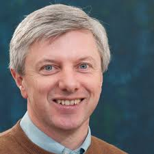

International Workshop on Complex Analysis and Probability: in honor of Tom Carroll
UCC, June 4, 2026
Speakers:
Rodrigo Bañuelos
(Purdue)
Joaquin Ortega-Cerdà
(Barcelona)
Xavier Massaneda
(Barcelona)
Michiel van den Berg
(Bristol)
Organizers:
Conall Kelly
(UCC), Catherine Maguire (UCC),
Robert Osburn
(UCC), Niall Walsh (UCC)
Funding: IRCLA/2023/1934